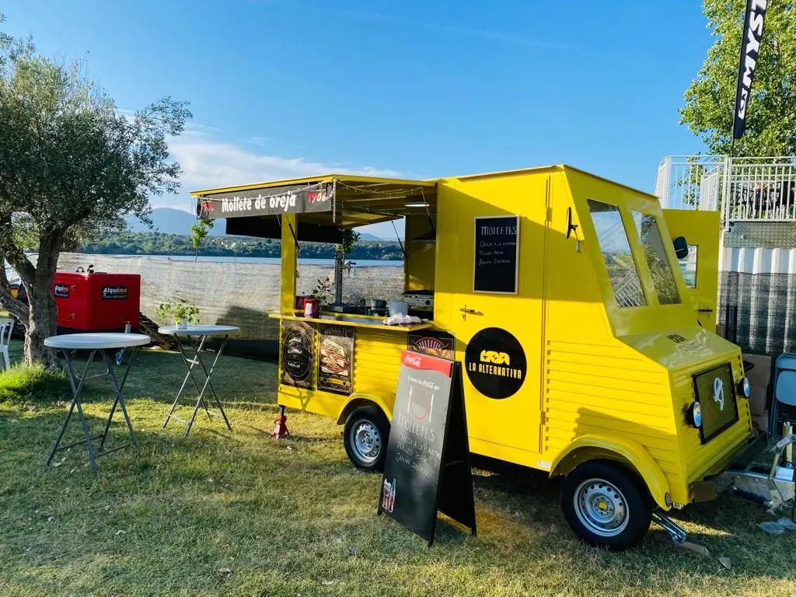

Sabor
Comida callejera hecha para disfrutar.

Alquiler de foodtruck · Catering para eventos
Alquila nuestra food truck y llevamos el catering a tu evento en Talavera de la Reina y toda la provincia de Toledo. Street food recién hecha para bodas, cumpleaños, empresas y festivales.
Quiénes somos
Somos La Alternativa Go, una foodtruck pensada para llevar buena comida, buen ambiente y muchas ganas de pasarlo bien allí donde haya algo que celebrar. Nos movemos por eventos, fiestas, cumpleaños, celebraciones privadas, festivales y eventos de empresa por Talavera de la Reina y toda la provincia de Toledo. Preparamos una propuesta de street food sencilla, sabrosa y hecha para disfrutar sin complicaciones.
Comida callejera hecha para disfrutar.
Llevamos la foodtruck hasta tu evento.
Nos adaptamos al ambiente y al tipo de celebración.
Servicios
Puedes contratar solo la foodtruck, el catering completo o las dos cosas. Nos desplazamos por Talavera de la Reina y la provincia de Toledo y montamos el servicio a la medida de tu evento.
Llevamos la foodtruck hasta tu evento en Talavera de la Reina y la provincia de Toledo, montada y lista para servir.
Catering de street food adaptado a tu celebración: elegimos contigo las raciones y ajustamos las cantidades a tus invitados.
Nos encargamos de la comida, el personal y el montaje para que tú solo tengas que disfrutar de tu evento.
Más información: alquiler de food truck en Talavera de la Reina, catering para bodas y catering para empresas en Talavera y Toledo.
Carta
Street food sencilla, sabrosa y recién hecha. Estos son nuestros básicos: a partir de aquí montamos el menú de catering según el tipo de evento y el número de invitados.
Eventos
Lleva La Alternativa Go a tu próxima celebración en Talavera de la Reina o cualquier punto de la provincia de Toledo y convierte cualquier evento en una auténtica experiencia street food.
Celebra a lo grande con comida para todos.
Ambiente, música y street food sin límites.
El toque diferente que nadie olvida.
Comidas informales, afterworks y ferias.
Servicio rápido para mucho público.
Ferias, verbenas y fiestas de barrio.
Galería
Festivales, cumpleaños, fiestas y mucha comida recién hecha.
La Alternativa
Además de nuestra foodtruck, puedes descubrir La Alternativa, nuestro gastro-bar en Talavera de la Reina.
Visita laalternativa.esLa Alternativa Go es la foodtruck · La Alternativa es el gastro-bar local
Preguntas frecuentes
Sí. Hacemos catering en Talavera de la Reina y en toda la provincia de Toledo para bodas, cumpleaños, eventos de empresa, fiestas privadas y festivales. Preparamos un menú cerrado por persona con las cantidades ajustadas al número de invitados.
Sí. Puedes alquilar nuestra foodtruck (food truck) en Talavera de la Reina solo con el servicio de barra o junto con el catering completo. La llevamos hasta tu evento, la montamos y la dejamos lista para servir.
Incluye el montaje y desmontaje, la cocina propia dentro de la foodtruck y el personal de servicio durante el evento. Nos adaptamos al espacio disponible, nos coordinamos con el lugar de la celebración, ponemos el menaje desechable y nos encargamos de la recogida.
Depende del número de invitados, del menú y del lugar del evento, así que preparamos cada presupuesto sin compromiso. Como referencia, en barra los molletes cuestan 6 € y las raciones 10 €; para eventos hacemos un precio cerrado por persona.
Estamos en Talavera de la Reina y nos movemos por toda la provincia de Toledo: Toledo, Oropesa, Calera y Chozas, Cebolla, Velada, Alcaudete de la Jara, La Pueblanueva, Torrijos, Illescas, Consuegra y Quintanar de la Orden, entre otros.
Sí. Hacemos catering para bodas y celebraciones familiares, y también para eventos de empresa: comidas informales, afterworks, ferias, desayunos y cócteles. Trabajamos con horarios flexibles, también de noche.
Rellena el formulario de presupuesto, llámanos al +34 653 79 45 37 o escríbenos por WhatsApp. Cuéntanos la fecha, el lugar y el número de invitados y te respondemos con una propuesta.
Reservas
Cuéntanos qué estás preparando y nos ponemos en contacto contigo. Presupuesto sin compromiso para alquilar la foodtruck con o sin servicio de catering.